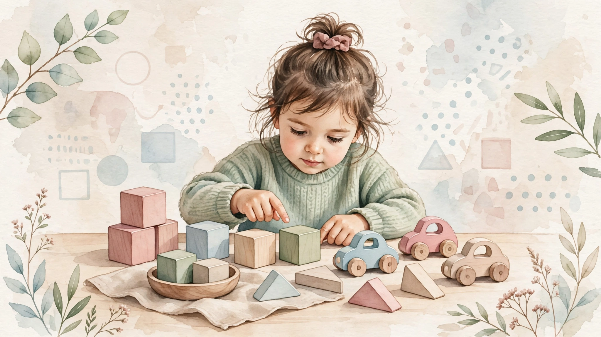

Predmatematičke vještine: rani temelj matematike

Teškoće ne nestaju same od sebe
Razlike u predmatematičkim vještinama često su vidljive već u vrtićkoj dobi. Bez ciljane podrške one se spontano ne smanjuju.
Izvor: Aunola i sur. (2015)
Rane matematičke vještine grade uspjeh
Rane matematičke vještine među najsnažnijim su prediktorima kasnijeg školskog uspjeha. U predškolskoj dobi one postavljaju čvrste temelje za uspjeh u školi i životu.
Izvor: Duncan i sur. (2007)
Što je kardinalnost?
Kardinalnost znači razumijevanje da zadnji izgovoreni broj pri brojenju označava ukupnu količinu skupa.
Izvor: Nguyen i sur. (2016)
Kako prepoznati teškoće (3–5 godina)?
Dijete često ima poteškoća, a evo i primjera iz svakodnevice:
Kada obratiti pažnju na brojenje?
Vještine brojenja razvijaju se postupno tijekom predškolske dobi kroz igru, svakodnevne aktivnosti i manipulaciju konkretnim predmetima.
Izvor: Grden (2018)
Primijetili ste nešto od navedenog?
Rano prepoznavanje i podrška značajno olakšavaju kasnije usvajanje matematike i školskih vještina. Javite nam se za procjenu.
Rezerviraj termin